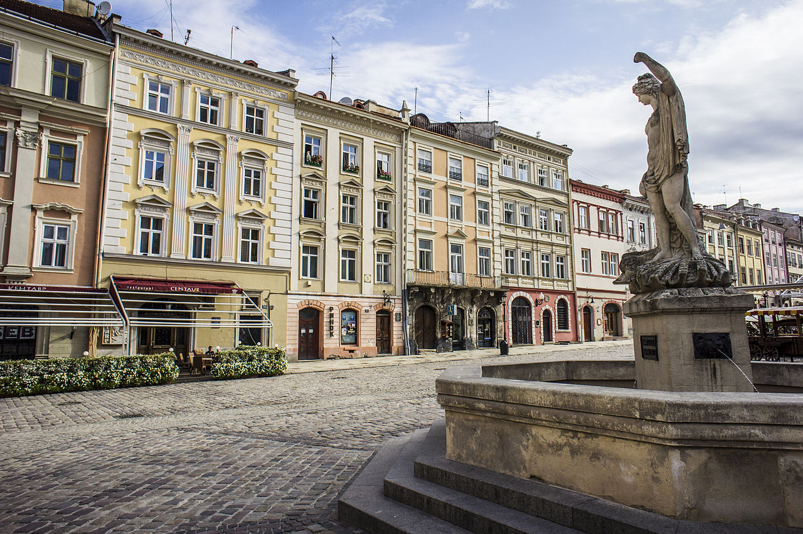

Lviv is the largest city in western Ukraine and the seventh-largest city in the country overall, with a population of around 728,350 as of 2016. Lviv is one of the main cultural centres of Ukraine.
Named in honor of Leo, the eldest son of Daniel, King of Ruthenia, it was the capital of the Kingdom of Galicia–Volhynia (also called the Kingdom of Ruthenia) from 1272 to 1349, when it was conquered by King Casimir III the Great who then became known as the King of Poland and Ruthenia. From 1434, it was the regional capital of the Ruthenian Voivodeship in the Kingdom of Poland. In 1772, after the First Partition of Poland, the city became the capital of the Habsburg Kingdom of Galicia and Lodomeria. In 1918, for a short time, it was the capital of the West Ukrainian People's Republic. Between the wars, the city was the centre of the Lwów Voivodeship in the Second Polish Republic.
After the German-Soviet invasion of Poland in 1939, Lviv became part of the Soviet Union, and in 1944–46 there was a population exchange between Poland and Soviet Ukraine. In 1991, it became part of the independent nation of Ukraine.
Administratively, Lviv serves as the administrative center of Lviv Oblast and has the status of city of oblast significance.
Lviv was the centre of the historical regions of Red Ruthenia and Galicia. The historical heart of the city, with its old buildings and cobblestone streets, survived Soviet and German occupations during World War II largely unscathed. The city has many industries and institutions of higher education such as Lviv University and Lviv Polytechnic. Lviv is also the home of many cultural institutions, including a philharmonic orchestra and the Lviv Theatre of Opera and Ballet. The historic city centre is on the UNESCO World Heritage List.
Lviv is located on the edge of the Roztochia Upland, approximately 70 kilometers (43 miles) from the Polish border and 160 kilometers (99 miles) from the eastern Carpathian Mountains. The average altitude of Lviv is 296 meters (971 feet) above sea level. Its highest point is the Vysokyi Zamok (High Castle), 409 meters (1342 feet) above sea level. This castle has a commanding view of the historic city centre with its distinctive green-domed churches and intricate architecture.
The old walled city was at the foothills of the High Castle on the banks of the River Poltva. In the 13th century, the river was used to transport goods. In the early 20th century, the Poltva was covered over in areas where it flows through the city; the river flows directly beneath the central street of Lviv, Freedom Avenue (Prospect Svobody) and the Lviv Theatre of Opera and Ballet.
| Go to another page |
|---|
|
click
a link
|